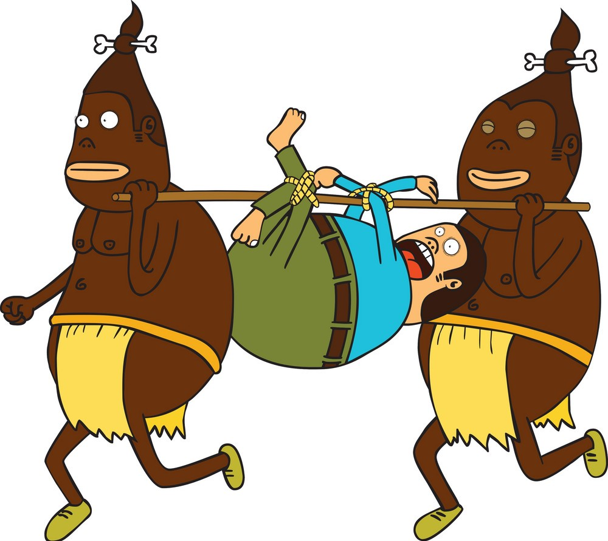

| "Cannibal's Delight" (Pulled Pork) | Pulled pork is so good, you'll forget it used to be a living creature. It's so tender, you can pull it apart with your bare hands. And it's so juicy, you'll need a bib to catch all the drippings. But be careful, pulled pork is addictive. Once you start eating it, you won't be able to stop. And before you know it, you'll be eating pulled pork for breakfast, lunch, and dinner. And that's when the nightmares start. You'll dream of waking up to find your bed covered in pulled pork. But don't worry. It's just a dream. Or is it? | $13.50 |  |
| "Morgue's Mystery Stew" (Vegetable Stew) | Vegetable stew is often seen as a healthy and nutritious dish. But what if I told you that vegetable stew is actually a portal to another dimension? A dimension where vegetables are alive and they are not happy to be eaten. Imagine taking a bite of vegetable stew and suddenly finding yourself in a world where carrots are armed with razor-sharp blades, potatoes are throwing rocks at you, and celery is trying to stab you with its pointy leaves. That's what vegetable stew really is. It's a trap. A trap set by vegetables to lure unsuspecting humans into their dimension and devour them. | $11.50 | |
| "Corpse au Gratin" (Scalloped Potatoes) | Scalloped potatoes are actually a metaphor for the human condition. We're all just thinly sliced pieces of meat, waiting to be layered together in the creamy sauce of life. And then, we're baked until we're golden brown and crispy. But the creamy sauce isn't just any sauce. It's a sauce made of our tears, our sweat, and our blood. It's a sauce made of all the pain and suffering that we experience in our lives.nd so, we eat the scalloped potatoes, and we enjoy them. But in the back of our minds, we know that they are a symbol of our own mortality. | $12.50 | |
| "Graveyard Gravy" (Mushroom Gravy) | Imagine pouring yourself a plate of mashed potatoes and mushroom gravy. You take a bite, and the gravy is so delicious that it melts in your mouth. But then, something strange happens. You start to feel dizzy. Your vision blurs. And then, the world around you disappears. You're in the underworld. The underworld is a dark and gloomy place. You see all sorts of creatures in the underworld, but the most terrifying creature of all is the mushroom man.A cruel and tyrannical ruler that he loves to torment his subjects. If you're ever in the underworld, be careful not to get caught by the mushroom man. If he does catch you, he'll force you to eat mushroom gravy for all eternity. | $11.50 |